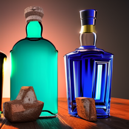

AQVT, the Eternal spirit

Do not abuse of this liquid. Never drink in an unsafe place. Remember the older it gets, the stronger it gets too.
Only impurities can weaken it. A lot like you.
The ingredients
- A still
- Two thick clay pots
- Empty bottles
- Cups and a louch
- A basket of your summer fruits
- Honey if your berries are not sweet enough
- Yeast
Preparation of the wine
- Choose your fruits well
- Wash them before slicing them, remove the seeds
- Crush them in a pot, pour honey if necessary.The sweetest it is, the fastest it turns to spirit.
- Take your other pot and lay honey then fruit purée in alternance, do not fill to the brim, leave three fingers.
- Dissolve your thumb worth of dry yeast in a cup of warm water. Pour it evenly in the pot. Add six cups of water.
- Put a plate underneath and on top of it. Let it ferment in a dry, tempered place. It will bubble, maybe overflow. Good.
- After a week, the yeast must do its glorious work effectively. stir gently the pot once a week for a month.
- At the end of this month, Bottle it then seal it. This wine may be young but will age well.
Preparation of the spirit
- Take your still, clean it. Always clean it first.
- Take a pot, pour water in it. the still should not touch fire, the warmth of the water is enough
- Pour your wine in the still, leave a quarter empty.If you never used a still, consult Ingvar the Permanent
- Keep the condenser cold, and wait for the alcohol to come out.use small cups, be attentive to the odor and the color.
- The drip must be slow but steady, do not be hasty.The spirit will come in four forms.
- The head: this part is not made for humans. Fire spirits will happily drink it.
- The first: a few time after the head, keep it for another distillation
- The heart: you will smell the fruits, without the solvent, the liquid will be clear
- The tail: the smell will be nearly gone, the liquid muddy. You can discard it.
- Clean your still, appreciate your hard work.
- You should not smell nor taste the solvents or bad spirits. Aerate it if you do. They are not meant to stay in it.
- Once the pungent smell and taste is gone, bottle it. This elixir will keep your warm and cool headed if you do not abuse it.
Back to the Book